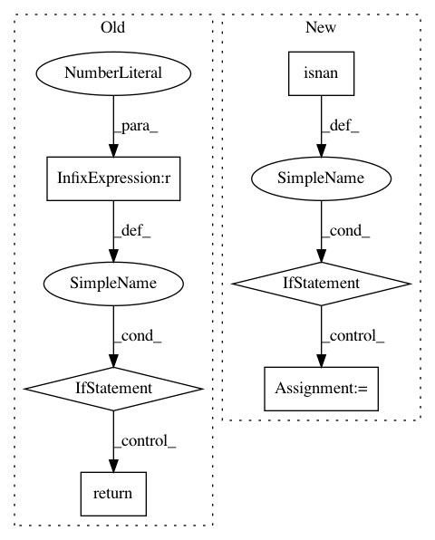

ae151484780b389b5c7b4530c9ac1ef4bb659e23,scipy/special/_basic.py,,factorial,#Any#Any#,2277
Before Change
out[n == current] = val
return out
else:
if np.ndim(n) == 0:
return 0 if n < 0 else gamma(n + 1)
n = asarray(n)
vals = gamma(n + 1)
return where(n >= 0, vals, 0)
After Change
un = np.unique(n).astype(object)
// Convert to object array of long ints if np.int can"t handle size
if np.isnan(n).any():
dt = float
elif un[-1] > 20:
dt = object
elif un[-1] > 12:
dt = np.int64
else:
dt = np.int
out = np.empty_like(n, dtype=dt)
// Handle invalid/trivial values
// Ignore runtime warning when less operator used w/np.nan
In pattern: SUPERPATTERN
Frequency: 3
Non-data size: 6
Instances
Project Name: scipy/scipy
Commit Name: ae151484780b389b5c7b4530c9ac1ef4bb659e23
Time: 2020-01-13
Author: rlucas7@users.noreply.github.com
File Name: scipy/special/_basic.py
Class Name:
Method Name: factorial
Project Name: scipy/scipy
Commit Name: b0f34cdfd3ec8e41521cfd1b4a19c8dabb51fbbf
Time: 2020-02-15
Author: pvanmulbregt@users.noreply.github.com
File Name: scipy/stats/_ksstats.py
Class Name:
Method Name: _kolmogn
Project Name: statsmodels/statsmodels
Commit Name: 907dd173d73cf73ba70d0e0c80d7a3298a23cae4
Time: 2020-06-04
Author: samuel.scherrer@posteo.de
File Name: statsmodels/tsa/exponential_smoothing/ets.py
Class Name: ETSModel
Method Name: _loglike_internal